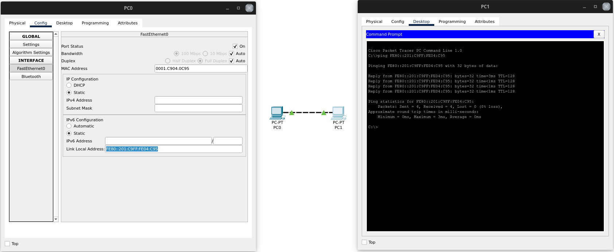
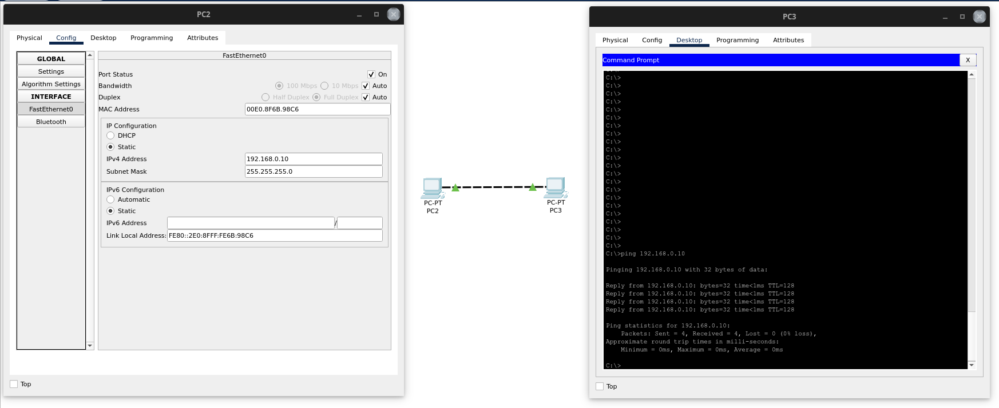
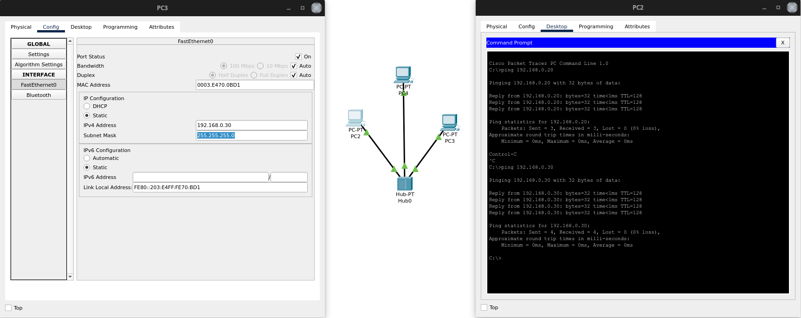
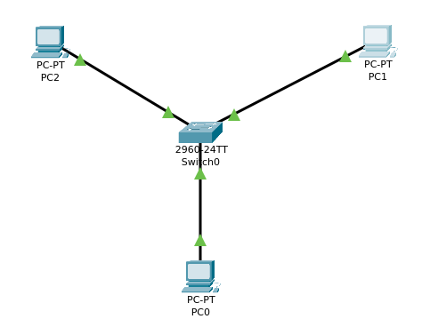
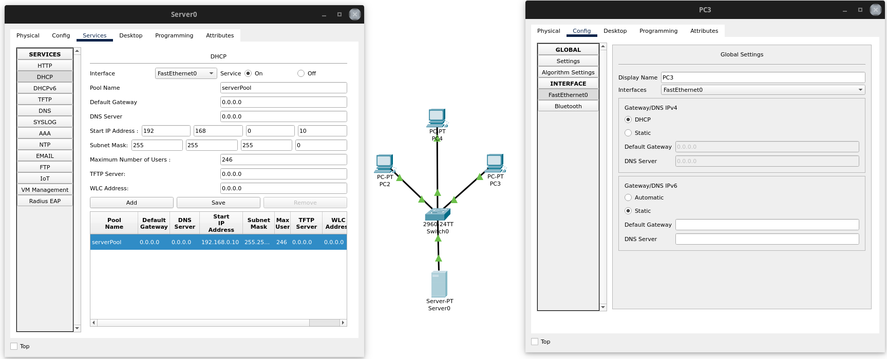
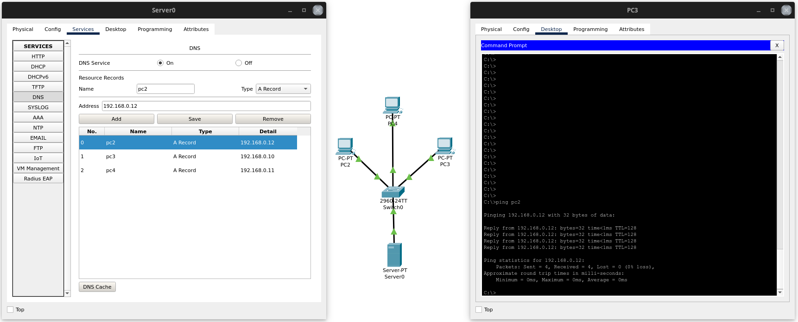
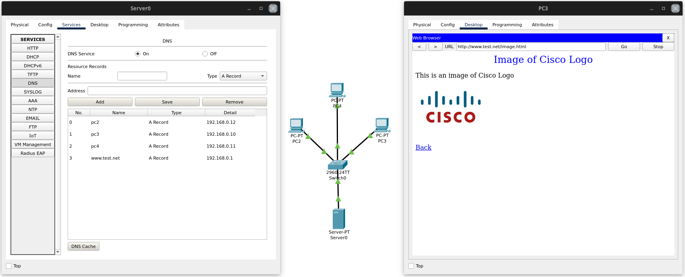

ITT Netzwerke
Als LAN bezeichnet man ein lokales Netz z. B. in einer Wohnung, einem Gebäude oder einem Gelände.

Abbildung 1: Ping mit IPv6 ohne Konfiguration
Die einfachste Form eines Netzwerkes ist eine Peer-to-Peer Verbindung (meist) über ein CAT-Kabel.
Alle modernen Anwendungen benötigen eine IP-Adresse um zu kommunizieren. Bei IPv6 bildet sich jedes Gerät automatisch eine sogenannte Lokal-Link-Adresse, die mit FE80:: beginnt. Damit ist ohne Konfiguration direkt eine Kommunikation möglich.

Abbildung 2: Ping mit IPv4-Adresse
Zur Nutzung von IPv4 muss jedoch zunächst eine statische IP-Adresse konfigurieren. D. h. dass diese manuell festgelegt wurde (statt per DHCP) und sich somit auch nicht ändert.

Abbildung 4: Shared Network mit Hub
Will man mehr als zwei Geräte miteinander verbinden ist die einfachste Möglichkeit ein Hub genannter passiver Netzverteiler. Dieser leitet alle Datenpakete an alle Ports weiter. Hierdurch kann es unter anderem zu Paketkollisionen kommen, sodass diese Methode nicht empfehlenswert ist.

Abbildung 5: Switched Network
Ein Switch arbeitet intelligent und kann z. B. Datenpakete geziehlt an ein Gerät mit einer spezifischen MAC-Adresse weiterleiten.

Abbildung 6: DHCP Server
Um neuen Geräten dynamisch eine neue IP-Adresse zuzuordnen braucht man einen Dynamic Host Configuration Protocol (DHCP)-Server.

Abbildung 10: DNS-Server
Sollen nun auch noch URLs genutzt werden, so wird ein Domain Name Server (DNS) benötigt, der einer URL eine IP-Adresse zuordnet.
Der DNS-Server führt eine Liste von Einträgen, in denen (z. B.)der Name eines Rechners, bzw. dessen URL einer IPv4- oder IPv6-Adresse zugeordnet werden.

Abbildung 11: Web-Server
Dies ermöglicht nun, das bequeme nutzen weiterer Ressourcen, wie zum Beispiel eines Webservers im lokalen Netz.